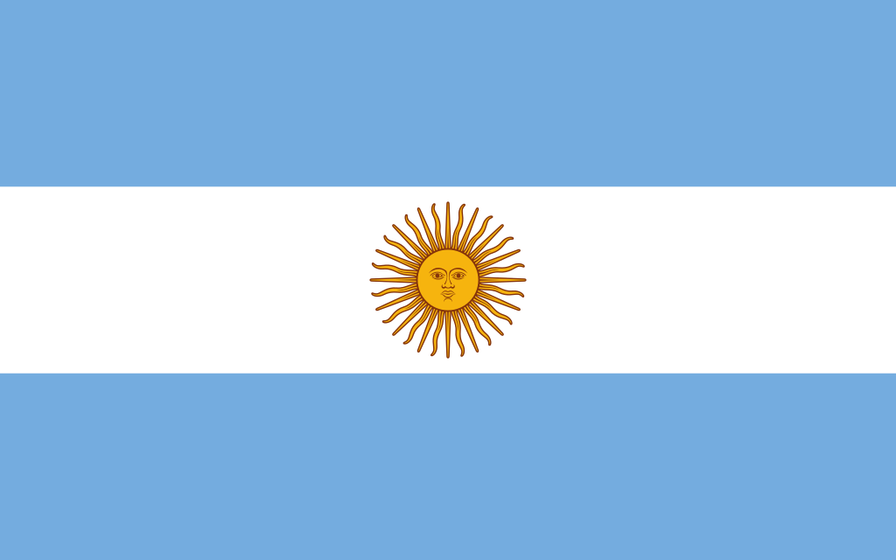

ARGENTINA: Conhecida carinhosamente como La Albiceleste, a Argentina é uma das grandes seleções de futebol do mundo, tendo conquistado 2 Copas do Mundo. A Argentina possui 17 participações em Copas do Mundo (contando até a Copa de 2018), não tendo participado apenas de quatro Copas.
A copa 22, tendo início em novembro,é um dos maiores eventos do mundo e esse ano se passa no catar. A copa do mundo é realizada a cada quatro anos e reúne diversos países em uma competição de futebol masculino, organizado pela federação internacional de futebol.

POLÔNIA: A seleção polonesa participa de sua nona edição da Copa do Mundo de Futebol em 2022 A seleção da Polônia ficou em quarto lugar no Grupo H da 1ª Fase da Copa do Mundo de 2018 e não se classificou para as Oitavas de Final do Mundial de 2018.
ARÁBIA SAUDITA: Esta é a sexta Copa do Mundo da Arábia Saudita. A de 1994 foi a primeira e aquela em que chegou mais longe – ficou com a 12ª colocação geral após ser eliminada nas oitavas de final pela Suécia. Nos últimos anos, o país viveu uma revolução no futebol com muito investimento nos clubes e seleções. O Al-Hilal, por exemplo, se tornou uma potência na Ásia e cedeu 12 jogadores para a seleção para esta Copa do Mundo.

MÉXICO: A primeira participação do México na Copa do Mundo aconteceu em 1930, tendo sido agrupados com a Argentina, Chile e França. Os melhores desempenhos da seleção mexicana foram em 1970 e 1986 quando o México chegou às quartas-de-final.